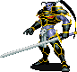
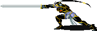
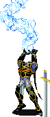
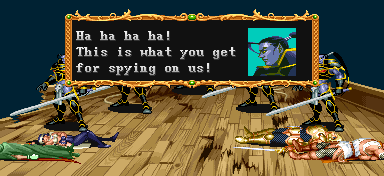
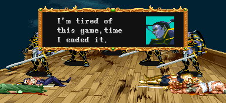
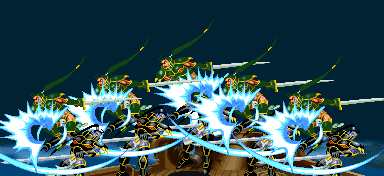
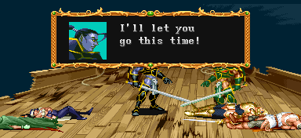
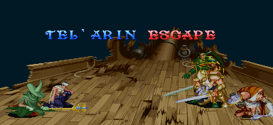

TEL'ARIN
|  에잉모어 상공 (스테이지 4) 두번째 보스 '텔'아린' |
기본 정보
픽 포켓으로 얻을 수 있는 아이템
클리어 시간 측정의 시작 시점
텔아린의 HP가 보이는 시점 부터 최단 시간 클리어 기록
클레릭 / 시프 4:47 |
|||||||||
나름대로 스토리를 가지고 등장하는 최초의 보스. 또한 대사도 있다. 스켈레톤을 소환하기도 하고 헤이스트를 이용해서 플레이어를 괴롭힐 가능성이 크지만 공략법만 알면 어렵지 않게 제압이 가능하다. 초반의 보스치고는 HP가 많으며 다른 보스와는 달리 HP가 줄어들면 도망을 친다.
클리어 점수에 대해서
마지막 데미지를 입힌 공격이 투척무기나 주문이었다면 NICE FIGHT 점수를 얻게 된다. 2인 이상 플레이시에도 마찬가지 이며 FINISH 점수는 아무도 얻지 못하게 된다.
패턴 분석
은색은 파이터가 입는 데미지, 푸른색은 매직 유저가 입는 데미지.
클레릭/드워프는 파이터에 가까운 데미지를, 시프/엘프는 매직 유저에 가까운 데미지를 입는다.
※ 금색 이름의 공격을 하는 도중에는 D키를 쓸 수 없다.
1~2인 플레이시 : 애니메이트 데드 시전 후 세번 이상 넘어지고 전체 HP의 60%가 소모 되었을 때
3~4인 플레이시 : HP에 상관없이 두번 넘어졌었을 때. 애니메이트 데드와 조건이 겹치면 애니메이트 데드 시전 후 헤이스트를 시전. ※ 헤이스트를 시전 했을 때의 대처법
얌전하게 가드를 계속 하는게 좋다. 왠만한 공격은 가드 후 카운터 공격에 당할 확률이 높기 때문이다.
한자리에서 계속 가드해도 안전한 경우는 두가지가 있다. 아래 첫번째 영상처럼 적당한 거리를 유지 하고 있을 경우, 두번째 영상처럼 약간 위/아래에서 가드하고 있을 경우이다.
이정도 거리를 유지하면 찌르기 공격도 안전하게 가드가 된다.
이정도 위치라면 찌르기 공격의 경우 플레이어 캐릭터에게 아예 닿지를 않는다.
더 가까운 거리라면 찌르기 공격을 가드 할 수가 없다. 구석으로 파고든다거나 너무 가깝게 접근하는 것 같으면 재빨리 반대편으로 도망가서 다시 거리를 맞춰보도록 하는게 좋다. 크게 원을 그리면서 이동하는 편이니 참고하자.
네모 반듯하지 않은 스테이지의 구석을 이용 해 볼 수도 있다. 특히 가드를 못하는 시프가 쓸만하다. 크게 원을 그리면서 이동하는 특성을 이용한 것 인데 먼저 아래 영상을 참고하자. 이런식으로 한번 걸리면 계속 제자리 걸음만 한다. 오른쪽이 아니라 왼쪽으로 도는 경우도 마찬가지 이다. 그러나 성공률이 높은 것은 아니니 주의하도록 한다. 매직 유저는 그냥 D → B → D → B를 구사하면 된다.
클레릭/드워프는 파이터에 가까운 데미지를, 시프/엘프는 매직 유저에 가까운 데미지를 입는다.
※ 금색 이름의 공격을 하는 도중에는 D키를 쓸 수 없다.
| 등장 와이번을 탄 채로 등장해서 스켈레톤 4마리를 소환한 후 스켈레톤이 전부 처리되면 텔레포트를 하면서 등장한다. 텔레포트를 할 때 등 뒤가 완전 무방비이기 때문에 쉽게 공격을 넣을 수 있다. |
|||||||
| 찌르기 (22/32) | |||||||
|  | 장검으로 찌르는 공격이다. 그림에서 보는대로 리치가 상당히 길며 특히나 공간이 작은 스테이지라서 방심하다가 맞을 수 있다. 또한 가까운 거리에서 가드를 시도 했을 경우 긴 장검의 판정이 방패를 뚫고 공격이 들어오기 때문에 가드를 하고자 하면 약간 거리를 둬야 한다. 이 점은 특히 텔'아린이 헤이스트를 썼을 때 가드로 대응 할 경우 명심해야 할 부분이다. |
||||||
| 베기 (23/33) | |||||||
 |
위에서 아래로 세로배기를 하는 공격이다. 그만큼 리치는 좀 짧으나 대신 판정이 위아래로 좀 더 넓다. 그림차 치기 위치에 있을 때 찌르기는 맞지 않아도 이 공격은 맞을 수 있다는 뜻이다. | ||||||
| 전진 베기 (20/30) | |||||||
 |
파이터의 슬래쉬와 비슷한 모션을 가지고 있는 공격. 앞으로 전진을 하면서 가로 배기를 한다. 가깝게 붙었을 때 발동하며 꽤 빠르기 때문에 근접 공격을 예상하고 있다가 맞을 수도 있다. 또한 그림자 치기 위치에 있더라도 맞을 수 있을 만큼 판정도 꽤 넓으며 플레이어의 공격을 텔'아린이 가드 했을 때 플레이어가 가까이 있다면 카운터 공격으로 발동된다. |
||||||
| 점프 베기 (20/30) | |||||||
| 점프를 하면서 장검을 내려친다. 거리가 떨어져 있을 때 주로 날아오는 공격으로 낮게 점프 할 때도 있고 높게 점프 할 때도 있는데 체공시간이 길기 때문에 피하기 쉬운 편이며 오히려 반격의 기회가 될 수도 있다. 다만 근접 공격 2의 경우처럼 위아래로 판정이 넓고 그 뿐만이 아니라 뒤쪽까지 판정이 형성되기 때문에 어정쩡하게 그림자 치기를 유지하거나 너무 급하게 뒤에서 접근하면 맞을 수 있다. |
|||||||
| 라이트닝 볼트 (27/40) | |||||||
 |
라이트닝 볼트를 일직선으로 시전한다. 먼거리에서 텔'아린과 플레이어가 일직선상에 있을 때 시전하며 준비동작이 눈에 뻔히 보이고 또한 시전 중엔 무방비 상태이기 때문에 피하기도 쉽고 빈틈을 노리기도 쉽다. 그대신 준비동작과 시전동작 초기에 약간의 무적시간이 있다. 다만 헤이스트가 걸린 상태라면 빈틈이 거의 사라지기 때문에 주의. 주문이니 만큼 주문 무효화 반지가 있다면 피해를 입지 않는다. |
||||||
| 파이어 볼 (24/36) | |||||||
| 파이어 볼을 일직선으로 시전한다. 마찬가지로 준비동작과 시전동작 초기에 약간의 무적시간이 있다. 라이트닝 볼트에 비해 시전시간이 짧기 때문에 빈틈을 노리기가 조금 더 힘들며 또한 파이어 볼이 날아가다가 지면에 닿으면 폭발하기 때문에 피하려면 좀 더 확실하게 피해야 한다. 당연히 불 내성의 반지와 주문 무효화 반지가 있다면 피해를 입지 않는다. |
|||||||
| 백점프 | |||||||
 |
간혹 접근을 하면 뒤쪽으로 훌쩍 뛰면서 회피를 한다. 그런데 체공시간이 길어서 충분히 쫓아갈 시간이 된다. 빈틈 투성이 이므로 좋은 기회가 된다. | ||||||
| ※ 애니메이트 데드 | |||||||
| HP가 일정량 이하로 떨어지면 스켈레톤 4마리를 다시 소환한다(3~4인 일경우 5마리). 텔'아린을 공격하는데 꽤나 걸리적 거린다. 스켈레톤의 공격에 당하지 않도록 그림자치기 위치를 잘 잡는게 중요하다. 매직 유저나 엘프는 라이트닝 볼트의 데미지를 끌어올리는데 이용할 수도 있다. 시전 조건은 전체 HP의 20%가 소모될 때 마다 이며 첫번째로 불러낸 스켈레톤이 다 제거 됐을 때 또 다시 HP가 20%감소 됐다면 쓰러지거나 공격 받고 모션을 회복 한 후 다시 애니메이트 데드를 시전 한다. |
|||||||
20%의 피해를 실제 HP바로 나타내면 아래와 같다.
|
|||||||
| ※ 헤이스트 | |||||||
|  | HP가 일정량 이하로 떨어지면 헤이스트를 시전한다. 모든 행동이 빨라지며 플레이어의 반응속도와 캐릭터의 움직임이 그 속도를 따라가기 힘들기 때문에 가뜩이나 좁은 스테이지에서 상당히 고생할 수 밖에 없다. 약간 빨라지는 헤이스트와 상당히 빨라지는 헤이스트 두가지가 있는데 어느쪽이 발동될지는 무작위이며 시전 행동에는 차이가 없어서 움직이기 전까지는 알아볼 수 없다. 당연히 상당히 빠른 헤이스트가 발동되면 그만큼 더 힘들어진다. 또한 당연한 이야기지만 가장 좋은 방법은 헤이스트가 발동되기 전에 끝내는 것 이다. 헤이스트의 지속효과는 약 17초 가량이다. |
||||||
※ 헤이스트가 발동되는 시점
1~2인 플레이시 : 애니메이트 데드 시전 후 세번 이상 넘어지고 전체 HP의 60%가 소모 되었을 때
| 1인 플레이시 실제 HP | |
| 2인 플레이시 실제 HP |
3~4인 플레이시 : HP에 상관없이 두번 넘어졌었을 때. 애니메이트 데드와 조건이 겹치면 애니메이트 데드 시전 후 헤이스트를 시전. ※ 헤이스트를 시전 했을 때의 대처법
얌전하게 가드를 계속 하는게 좋다. 왠만한 공격은 가드 후 카운터 공격에 당할 확률이 높기 때문이다.
한자리에서 계속 가드해도 안전한 경우는 두가지가 있다. 아래 첫번째 영상처럼 적당한 거리를 유지 하고 있을 경우, 두번째 영상처럼 약간 위/아래에서 가드하고 있을 경우이다.
이정도 거리를 유지하면 찌르기 공격도 안전하게 가드가 된다.
이정도 위치라면 찌르기 공격의 경우 플레이어 캐릭터에게 아예 닿지를 않는다.
더 가까운 거리라면 찌르기 공격을 가드 할 수가 없다. 구석으로 파고든다거나 너무 가깝게 접근하는 것 같으면 재빨리 반대편으로 도망가서 다시 거리를 맞춰보도록 하는게 좋다. 크게 원을 그리면서 이동하는 편이니 참고하자.
네모 반듯하지 않은 스테이지의 구석을 이용 해 볼 수도 있다. 특히 가드를 못하는 시프가 쓸만하다. 크게 원을 그리면서 이동하는 특성을 이용한 것 인데 먼저 아래 영상을 참고하자. 이런식으로 한번 걸리면 계속 제자리 걸음만 한다. 오른쪽이 아니라 왼쪽으로 도는 경우도 마찬가지 이다. 그러나 성공률이 높은 것은 아니니 주의하도록 한다. 매직 유저는 그냥 D → B → D → B를 구사하면 된다.
클리어 조건
다른 보스와는 달리 HP가 일정 수준으로 떨어지면 도망을 치면서 클리어가 된다.
1. HP가 완전히 사라질 경우 무조건 도망을 친다.
2. 애니메이트 데드 시전 이 후 한번 이상 쓰러졌다가 일어난 상태에서 플레이어의 공격에 맞았을 때 HP가 40%이하로 떨어진 상태라면 도망을 친다.
3. 컨티뉴얼 라이트나 투척무기 등으로 콤보수치 초기화가 3번 이상 이루어진 상황에서 HP가 40%로 떨어졌을 때 도망을 친다.
1. HP가 완전히 사라질 경우 무조건 도망을 친다.
2. 애니메이트 데드 시전 이 후 한번 이상 쓰러졌다가 일어난 상태에서 플레이어의 공격에 맞았을 때 HP가 40%이하로 떨어진 상태라면 도망을 친다.
| 1인 플레이시 실제 HP | |
| 2인 플레이시 실제 HP | |
| 3인 플레이시 실제 HP | |
| 4인 플레이시 실제 HP |
3. 컨티뉴얼 라이트나 투척무기 등으로 콤보수치 초기화가 3번 이상 이루어진 상황에서 HP가 40%로 떨어졌을 때 도망을 친다.
시간내에 클리어하지 못했을 경우
스테이지가 시작되고 약 1분 30초가 지났을 경우 뒷 배경이 검은 하늘에서 숲으로 바뀐다.
배경변화만 보고 싶다면 1분 30초 정도로 넘어가기 바란다.
그리고 텔'아린의 HP가 보인 순간 부터 약 1분 30초가 지났을 경우 나중에 비상착륙을 하지 못하고 비행정이 파괴되어 스테이지 5-B(아인슨 마을)로 갈 수 없게 된다. 파티에 엘프가 없다면 선택지 선택 없이 바로 스테이지 5-A(절망의 숲)으로 진입하게 된다. 나름대로의 시간에 따른 이벤트라 할 수 있겠다.
배경이 바뀌더라도 텔'아린만 시간내에 잡으면 스테이지 5-B로 갈 수 있다.
설명을 하자면 비행정은 공격을 받아서 추락하는 상황이고 텔'아린을 시간내에 처리 했다면 비상 조정간을찾아서 비상착륙을 하지만 시간을 초과 했다면 조정간이 파괴되어 손 쓸 방법없이 추락하고 비행정이 파괴되는 것 이다(그런데 캐릭터들이 멀쩡한 것은 어떻게 설명해야 될런지......).
배경을 보면 추락하고 있기는 한데 텔'아린을 도망치게 하지 않는 한 숲이 무한으로 스크롤 된다.
배경변화만 보고 싶다면 1분 30초 정도로 넘어가기 바란다.
그리고 텔'아린의 HP가 보인 순간 부터 약 1분 30초가 지났을 경우 나중에 비상착륙을 하지 못하고 비행정이 파괴되어 스테이지 5-B(아인슨 마을)로 갈 수 없게 된다. 파티에 엘프가 없다면 선택지 선택 없이 바로 스테이지 5-A(절망의 숲)으로 진입하게 된다. 나름대로의 시간에 따른 이벤트라 할 수 있겠다.
배경이 바뀌더라도 텔'아린만 시간내에 잡으면 스테이지 5-B로 갈 수 있다.
설명을 하자면 비행정은 공격을 받아서 추락하는 상황이고 텔'아린을 시간내에 처리 했다면 비상 조정간을찾아서 비상착륙을 하지만 시간을 초과 했다면 조정간이 파괴되어 손 쓸 방법없이 추락하고 비행정이 파괴되는 것 이다(그런데 캐릭터들이 멀쩡한 것은 어떻게 설명해야 될런지......).
배경을 보면 추락하고 있기는 한데 텔'아린을 도망치게 하지 않는 한 숲이 무한으로 스크롤 된다.
공통 공략법
궁극적으로 텔'아린의 HP를 40%까지 떨어뜨려서 보내는 것이 목표지만 그전에 헤이스트를 쓸 가능성이 아주 크다는 것이 고민거리다. 그러니 애니메이트 데드를 시전하기 전까지 HP를 최대한 깎아놓고 애니메이트 데드 시전후에 세번 이상 넘어지지 않도록 되도록 적은 공격횟수로 돌려보내는 것이 중요하다.
쉽게 쓸 수 있는 방법은 투척무기를 이용하는 것이다. 단검이나 오일이 쓰기에 여러모로 적합하다. 단검을 이용하면 쓰러뜨리지 않고 데미지를 줄 수 있기 때문에 애니메이트 데드를 시전하기 전까지 HP를 최대한 줄일 수 있다. 또한 오일의 경우 '오일을 던지고 다운 공격'으로 도망치기 직전까지 HP를 줄여 놓을 수 있다. 무기 데미지가 약한 시프와 콤보 데미지가 빈약한 매직 유저의 경우 특히 단검 혹은 오일의 사용이 더욱 중요하다.
더 자세한 방법은 클래스 별 공략을 보도록 하자.
쉽게 쓸 수 있는 방법은 투척무기를 이용하는 것이다. 단검이나 오일이 쓰기에 여러모로 적합하다. 단검을 이용하면 쓰러뜨리지 않고 데미지를 줄 수 있기 때문에 애니메이트 데드를 시전하기 전까지 HP를 최대한 줄일 수 있다. 또한 오일의 경우 '오일을 던지고 다운 공격'으로 도망치기 직전까지 HP를 줄여 놓을 수 있다. 무기 데미지가 약한 시프와 콤보 데미지가 빈약한 매직 유저의 경우 특히 단검 혹은 오일의 사용이 더욱 중요하다.
더 자세한 방법은 클래스 별 공략을 보도록 하자.
텔'아린이 돌아다닐 경우 빈틈 유도하기
텔'아린과 약간 거리를 두고 수평한 위치에 있으면 텔'아린은 라이트닝 볼트나 파이어 볼을 시전하는 경우가 많다. 의도적으로 텔'아린 근처를 서성이면서 주문 시전을 유도 할 수 있는 것이다. 걸려들었으면 그림자 치기 위치 혹은 뒤로 돌아가서 빈틈을 노리자. 대 점프 공격도 빈틈을 노릴 수 있는데 너무 성급하게 접근하면 맞을 수 있다.
시프와 매직 유저의 경우 아래 영상처럼 백스텝으로 뒤를 잡을 수 있다. 텔'아린이 뒤로 접근할 때 백스텝을 하면 텔'아린은 거의 대부분 근접 공격을 할 것이다. 뒤를 잡게 되면 쉽게 콤보를 넣을 수 있다.
시프와 매직 유저의 경우 아래 영상처럼 백스텝으로 뒤를 잡을 수 있다. 텔'아린이 뒤로 접근할 때 백스텝을 하면 텔'아린은 거의 대부분 근접 공격을 할 것이다. 뒤를 잡게 되면 쉽게 콤보를 넣을 수 있다.
클리어 후의 대사

"망할 자식들! 이제부터 내 진짜 힘을 보여주마!"

분신술(??)을 써서 5명으로 늘어난 후 5발의 파이어 볼을 날리고 플레이어들은 전부 쓰러진다.

"하하하하! 우리를 염탐한 것에 대한 댓가다!"

"이 놀이도 지쳤다, ??????"

다시 파이어 볼을 시전하려는 텔'아린을 급습하는 의문의 인물 (이라고 하기엔 알려질 만큼 알려졌지만)

"이번엔 보내주도록 하지!"

"다시 만나기를 기대하마."

그리고 웃어재끼며 어디론가 텔레포트 해 버리고 이 스테이지는 마무리가 된다.